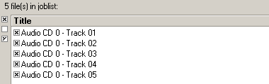
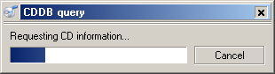
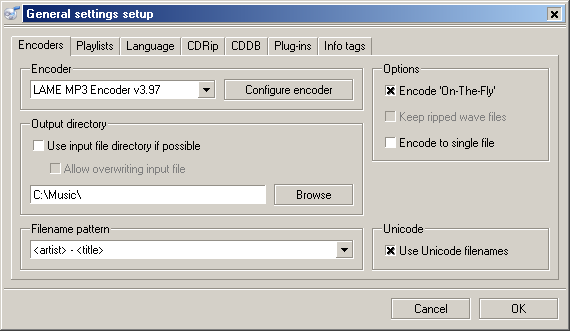
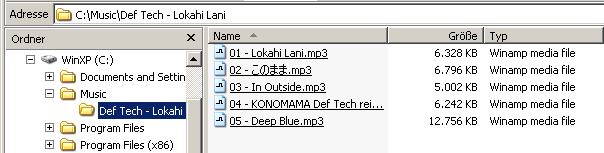
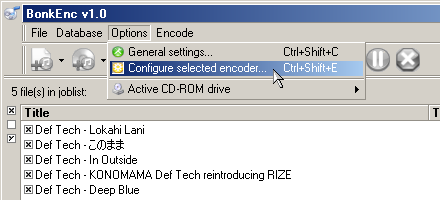
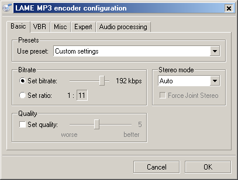
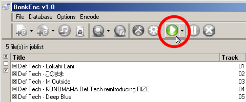
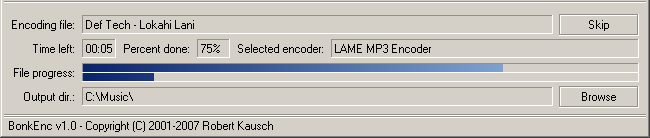

Baixe a versão mais recente do fre:ac no SourceForge ou em fre:ac homepage. Instale o programa e inicie. Agora ponha um CD de áudio na sua drive de CD/DVD. As faixas do CD normalemente aparecem automaticamente na janela principal do fre:ac. Se não acontecer, clique em "Adicionar conteúdos de CD de áudio" para adicionar as faixas à lista de tarefas.
Como não queremos inserir manualmente os nomes dos CDs e faixas, podemos requisitar desde uma base de dados disponível online de modo a que preencha esses dados por nós. Para realizar esta tarefa ir ao menu "Base de Dados" e seleccionar "Pesquisar a base de dados CDDB". Obteremos uma janela como a mostrada aqui:
O programa automaticamente preenchera as faixas com a informação:

Uma vez realizada esta tarefa, devemos configurar as propriedades gerais para o programa. Ir ao menu "Opções" e seleccionar "Propriedades gerais". Será mostrada a seguinte janela:
Na primeira tela, podemos definir as configurações do codificador. fre:ac usa como padrão o codificador LAME MP3. Vamos usá-lo neste tutorial. Certifique-se que a codificação opção "codificar 'on the fly'" está marcada. Também deve definir o directório de saída onde quer guardar os MP3s codificados. Pode definir esse directório para o seu directório de música
A caixa da sintaxe do nome de ficheiro é onde pode definir a forma como os nomes dos ficheiros serão guardados. Ora, eu ordeno as pastas com o nome do álbum e artista e os nomes dos ficheiros serão as faixas seguido do seu título. O padrão a escolher será "<artist> - <album>\<track> - <title>". Assim, neste caso, será preenchido como mostra a figura:
Para os utilizadores mais avançados existem outras propriedades que podem ser modificadas de modo a ajustar aos seus gostos ou requerimentos pessoais.
Agora devemos configurar o codificador LAME de modo a obter um MP3 de saída com boa qualidade. Ir ao menu "Opções" e seleccionar "Configurar codificador seleccionado".
IYourá obter uma janela como a que se mostra a seguir.
fre:ac vem com várias configurações diferentes para o codificador LAME. A todos estes podemos dar configurações diferentes para o codificador com várias qualidades. Quanto maior a definição (por exemplo, "Extremo"), mais espaço o MP3s ocupará no seu disco rígido, mas o melhor que irá soar. Eu prefiro usar as configurações personalizadas e qualidades definidas individualmente. Pode ver essas configurações aqui. Por agora, vamos deixar no modo pré-definido. Pressione OK e podemos seleccionar as faixas que queremos extrair e codificar.
Agora que estamos na janela principal, podemos seleccionar quais as faixas que queremos extrair e codificar. À direita de cada faixa existe uma pequena caixa de verificação. As que marcam os ×, dentro da caixa, serão aquelas que vão ser extraídas e codificadas. Como quero extrair todo o CD deixarei tudo seleccionado, mas se quiser só uma faixa desmarque todas as outras que não pretende extrair.
Pode-se agora carregar no grande botão de play que iniciará o processo de codificação.
Na parte final da janela iniciará a mostrar a barra de progresso:
À medida que cada faixa acaba de ser ripada, da lista de tarefas (onde se mostrava todas as faixas) serão removidas automaticamente todas as faixas cujo processo de codificação foi finalizado.
Parabéns! Acabou de ripar e codificar o seu primeiro CD com o fre:ac!